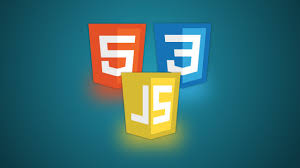

Learn Web Development as a Beginner
Written by Nitin | Aug 29, 2025Web development is one of the most popular and useful skills you can learn as a student. Whether you want to build your own projects, start freelancing, or even launch a startup, knowing how to make websites opens a ton of opportunities.
I’m still a student myself, so I know how overwhelming it feels at the beginning. There are too many tutorials, frameworks, and new tools. But if you follow a step-by-step roadmap, it becomes much easier.
1. Start with the Basics: HTML, CSS, and JavaScript
Think of websites like buildings:
- HTML → the structure (bricks and walls).
- CSS → the design (paint, furniture, colors).
- JavaScript → the brain (buttons, animations, dynamic stuff).
Start small — make a personal portfolio, a simple blog (like this site!), or a to-do list. You’ll be surprised how much you learn just by practicing.
2. Learn Version Control (Git + GitHub)

Git and GitHub sound scary at first, but they’re essential. With GitHub, you can host your websites for free (like this KairaBlogger site), share code with friends, and even showcase your work to employers later.
Basic commands to start with:
git init
git add .
git commit -m "First project"
git push3. Build Projects, Not Just Tutorials

The mistake I made at first was just watching tutorials. But real learning starts when you build your own stuff. Projects can be super simple:
- A portfolio website with your name and picture.
- A blog site (like this one).
- A weather app that fetches data from an API.
- A mini calculator using JavaScript.
The more you build, the faster you learn.
4. Explore Frameworks (But Don’t Rush)

Once you’re comfortable with the basics, move to frameworks like:
- React.js → for building modern, interactive websites.
- Tailwind CSS → for faster and cleaner styling.
- Node.js → for backend development (servers, APIs).
But don’t rush — without solid basics, frameworks will only confuse you.
5. Join Communities & Share Your Work
Coding can feel lonely if you do it alone. Join communities on Discord, Reddit, or LinkedIn. Share your projects on GitHub and LinkedIn. Sometimes opportunities come just because people notice your work online.
🚀 Final Thoughts
Web development is a marathon, not a sprint. You don’t have to learn everything in one go. Start with the basics, build small projects, and slowly level up.
As a student, my best advice is: don’t just learn — create. Every project you finish gives you confidence, and in a year you’ll look back amazed at how far you’ve come.
So open your editor today, write your first line of HTML, and begin your journey. Who knows, the next big website might be yours! 🌐